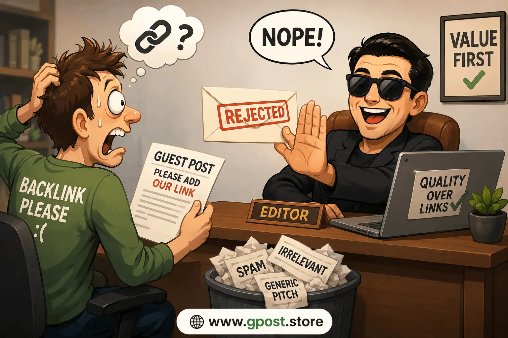

Why guest post pitches get rejected: Ultimate Guide for 2026
Why guest post pitches get rejected has become one of the biggest challenges in modern link building because editors now receive hundreds of outreach emails every single week. Most pitches fail within seconds due to weak personalization, irrelevant topics, spammy backlink intent, or poor understanding of editorial standards.
In 2026, guest posting still works extremely well for white-hat SEO, brand visibility, domain authority growth, and organic traffic improvement. However, blog owners have become much stricter because low-quality outreach campaigns continue flooding inboxes with AI-generated content and mass-produced emails.
Based on 100+ outreach campaigns we have analyzed, rejection patterns are surprisingly predictable. Most marketers focus heavily on backlinks while ignoring relationship building, niche relevance, editorial quality, and trust signals. That approach almost always leads to rejection.
This guide explains exactly why guest posts get rejected by blogs, how to handle guest post rejection professionally, and what strategies experienced SEO teams use to improve approval rates while building long-term editorial relationships.

Why guest post pitches get rejected and how niche relevance improves backlink outreach success
What Does “Why guest post pitches get rejected” Mean?
Why guest post pitches get rejected refers to the common outreach mistakes, trust issues, and SEO problems that cause publishers to decline guest posting requests. Rejections usually happen because pitches look spammy, irrelevant, overly promotional, or disconnected from the blog’s audience and editorial standards.
Guest posting has evolved dramatically during the last few years. Earlier, many site owners accepted almost any article if it included a backlink. That is no longer true. Google’s spam policies and stricter editorial standards forced publishers to prioritize quality, topical relevance, and reader value.
Today, editors evaluate much more than writing quality. They analyze your email tone, website quality, niche relevance, outbound link patterns, anchor text strategy, and whether your outreach looks automated.
For example, one SaaS company contacted a health and wellness blog requesting a guest article about CRM automation software. The pitch was instantly rejected because the topic had zero niche relevance. Even though the company had strong domain authority, the outreach ignored audience alignment completely.
Why Guest Post Rejections Matter for SEO in 2026
Guest post rejection rates directly affect the efficiency of your link building strategy. The higher your rejection rate, the more time, money, and resources your outreach campaign wastes. Smart SEO teams focus on improving approval rates instead of simply sending larger volumes of emails.
According to industry outreach studies from BuzzStream, average cold outreach response rates often remain below 10%. That means poor outreach strategy can destroy scalability very quickly.
High-quality guest posting still delivers powerful SEO benefits:
- Builds authoritative backlinks that improve SERP visibility
- Increases domain authority through editorial links
- Drives qualified referral traffic from niche audiences
- Strengthens brand trust and topical authority
Understanding the reasons site owners don't approve guest posts also helps prevent Google spam signals. Low-quality outreach campaigns often leave patterns that reduce trust over time. To improve outreach efficiency, many SEO professionals now follow structured strategies like Outreach Response Rate Increase Tips.
In our experience, businesses that focus on relevance and editorial value consistently outperform aggressive mass outreach strategies.
Types of Guest Post Outreach Rejections
Free or Organic Outreach Rejections
These rejections happen when marketers target blogs organically without offering sponsorships or payment. Most free outreach campaigns fail because emails lack personalization and clear audience value.
- Pros: White-hat SEO value and natural editorial links
- Cons: Higher rejection rates and slower approvals
Paid or Sponsored Guest Post Rejections
Sponsored outreach involves paid placements. Many publishers reject these pitches because they fear Google penalties, excessive outbound links, or low editorial standards.
- Pros: Faster publishing opportunities
- Cons: Higher costs and potential trust concerns
Niche Blog Outreach Rejections
Niche-specific blogs usually reject pitches that fail topical relevance checks. Editors want content aligned closely with their audience interests and existing content strategy.
- Pros: Highly relevant backlinks and targeted traffic
- Cons: Extremely selective editorial standards
Editorial or Authority Site Rejections
Large authority websites maintain strict editorial processes. These sites reject low-quality outreach instantly because protecting trust and reputation matters more than accepting guest contributors.
- Pros: Powerful domain authority and trust signals
- Cons: Difficult approval process and long response times
Why Guest Posts Get Rejected by Blogs
The short answer is that most pitches prioritize backlinks instead of reader value. Editors care about protecting audience trust. If your outreach appears self-promotional or irrelevant, rejection becomes almost guaranteed.
Poor Personalization
Generic outreach emails remain one of the biggest rejection triggers. Editors instantly recognize templates starting with phrases like “Dear Webmaster” or “I loved your amazing blog.”
Personalized outreach works because it proves genuine research. Mentioning recent articles, audience interests, or content gaps dramatically improves trust.
Irrelevant Topics
Many marketers pitch unrelated topics simply to secure backlinks. This approach fails because publishers prioritize topical consistency.
A finance blog rarely accepts content about skincare trends. A cybersecurity publication usually rejects lifestyle content. Niche relevance directly impacts approval chances.
Low-Quality Writing
Editors reject articles with weak structure, grammatical issues, AI-style repetition, or shallow insights. Publishers want content that improves reader experience and supports long-term organic traffic growth.
Over-Optimized Anchor Text
Aggressive exact-match anchor text creates spam signals. Site owners understand Google’s link spam policies and avoid unnatural linking patterns.
A common mistake we see is marketers demanding keyword-heavy anchors like “best cheap SEO services.” Natural anchors perform much better. Businesses wanting safer linking practices often study guides about How Many Backlinks Per Guest Post Is Safe?.
Weak Website Authority
Publishers often evaluate your own website before approving contributions. Poor design, thin content, excessive ads, or spammy backlink profiles reduce credibility immediately.
No Audience Value
If your pitch focuses only on what you want instead of what the audience gains, editors usually ignore it. Strong outreach always highlights reader benefits first.
Reasons Guest Post Submission Failed
Most guest post submission failures happen because marketers ignore editorial expectations. Successful outreach requires understanding how publishers evaluate trust, relevance, and quality before approving contributors.
- Duplicate content: Publishers reject reused or lightly rewritten articles
- Thin content: Low-depth articles provide little SEO value
- Spammy backlinks: Excessive commercial links reduce trust
- Poor formatting: Walls of text hurt readability
- Irrelevant outbound links: Off-topic references create editorial concerns
- Mass outreach footprints: Automated campaigns often appear unnatural
Based on 100+ outreach campaigns, relevance and editorial quality consistently outperform volume-based strategies.
How to Find Better Guest Posting Opportunities
Finding the right websites dramatically improves guest post approval rates. Smart prospecting focuses on niche relevance, audience quality, editorial consistency, and organic traffic strength.
Use Google Search Operators
Google search operators help uncover blogs actively accepting contributors.
- “write for us” + SEO
- “guest post guidelines” + marketing
- “submit guest post” + SaaS
- “contribute article” + business
- “guest author” + digital marketing
Analyze Competitor Backlinks
Tools like Ahrefs and Semrush reveal competitor backlinks and editorial placements. This strategy identifies proven outreach targets already linking to similar businesses.
Use Outreach Tools
- Ahrefs: Backlink analysis and authority evaluation
- BuzzSumo: Content popularity research
- Hunter.io: Email discovery and verification
- Pitchbox: Outreach campaign automation
Mini Step-by-Step Prospecting Guide
- Identify niche-relevant websites
- Check domain authority and traffic metrics
- Review existing guest contributions
- Analyze content quality and publishing frequency
- Collect editor contact details
- Create personalized outreach segments
Step-by-Step Guest Posting Strategy
A successful guest posting campaign requires structure, personalization, and editorial trust. Random outreach rarely produces sustainable SEO results.
1. Niche Research and Target Identification
Start by identifying websites closely aligned with your niche. Relevance matters more than raw domain authority because contextual backlinks carry stronger SEO value. Review audience type, publishing topics, and engagement quality before outreach begins.
In our experience, niche-aligned websites convert better, respond faster, and drive stronger referral traffic.
2. Prospect Qualification
Evaluate websites carefully before sending pitches. Analyze domain authority, organic traffic trends, backlink quality, outbound link patterns, and indexing stability.
Avoid websites overloaded with sponsored content or irrelevant outbound links because these patterns often indicate low editorial standards.
3. Personalized Outreach
Strong outreach emails feel human and specific. Mention recent articles, audience interests, or content gaps that your expertise can fill.
Keep emails concise. Editors appreciate direct communication without unnecessary introductions or exaggerated compliments. Many marketers improve their outreach performance by learning How to Pitch Bloggers Effectively.
4. Content Creation and Pitch
Create topic ideas tailored specifically to the target audience. Generic titles reduce approval rates quickly.
Good pitches explain:
- Why the topic matters
- How readers benefit
- What unique perspective you bring
- Why your expertise fits the publication
5. Link Placement and Anchor Text Strategy
Natural anchor text matters heavily in 2026 SEO. Avoid excessive exact-match anchors because they create manipulation signals.
Diversify anchors using branded phrases, contextual references, and partial-match keywords. Editorial links should feel naturally integrated within the content.
6. Track, Measure, and Scale
Monitor backlink indexing, referral traffic, keyword rankings, and outreach response rates. Outreach campaigns improve significantly when you track rejection patterns carefully.
Scaling works best after identifying successful pitch formats and niche-specific strategies.
Common Mistakes to Avoid
Most outreach failures are preventable. Small improvements in personalization, relevance, and editorial quality often produce dramatic approval increases.
- ✗ Sending generic emails → Editors ignore obvious templates → Personalize every outreach message
- ✗ Targeting irrelevant sites → Weak niche relevance reduces trust → Focus on audience alignment
- ✗ Over-optimized anchors → Creates spam signals → Use natural anchor diversity
- ✗ Ignoring traffic metrics → Low-quality sites provide little SEO value → Evaluate organic traffic carefully
- ✗ Prioritizing quantity over quality → Mass outreach damages credibility → Build relationships strategically
- ✗ Using low-quality AI content → Thin content reduces approvals → Add expertise and unique insights
- ✗ Excessive backlink requests → Looks manipulative → Focus on reader value first
Pro SEO Tips for Maximum Results
Advanced guest posting success depends on trust, relevance, and relationship building. Strong outreach strategies compound over time when publishers view you as a credible contributor.
Use Anchor Text Diversity
Diverse anchor text profiles look more natural to search engines. Mix branded anchors, partial matches, URL anchors, and contextual references across campaigns.
Build Internal Links After Publishing
Internal linking strengthens the value of guest posts by helping search engines understand topical relationships and content hierarchy.
Prioritize Niche Relevance
Niche relevance multiplies link value because contextual backlinks strengthen topical authority. A highly relevant link usually outperforms multiple irrelevant links.
Focus on Relationships
Relationship-based outreach consistently beats transactional outreach. Editors often accept repeat contributors faster because trust already exists.
This strategy also reduces the reasons site owners don't approve guest posts in future campaigns.
How to Handle Guest Post Rejection
The best way to handle guest post rejection is professionally and strategically. Rejections are normal in SEO outreach and often provide valuable insights for improving future campaigns.
Do Not Argue with Editors
Professionalism matters. Editors remember respectful contributors and may reconsider future pitches if communication remains positive.
Ask for Feedback
Some publishers explain why pitches failed. This information helps identify weaknesses in outreach strategy, content positioning, or topic relevance.
Improve Your Outreach Process
Analyze rejected pitches carefully:
- Was personalization weak?
- Was the topic irrelevant?
- Did the email sound automated?
- Did anchor text appear manipulative?
Maintain Long-Term Relationships
Even rejected outreach can become future opportunities. Continue engaging naturally through comments, social sharing, or updated topic ideas.
Is Guest Posting Still Worth It in 2026?
Yes, guest posting is absolutely still worth it in 2026 when executed correctly. High-quality editorial backlinks remain one of the strongest ranking signals for competitive search terms.
Google continues discouraging manipulative link schemes, but editorially earned guest posts still provide significant SEO value when they prioritize audience benefit and topical relevance.
Guest Posting vs Other Link Building Methods
- Guest Posting: Strong authority, contextual backlinks, brand exposure
- Niche Edits: Faster placements but limited editorial control
- Directory Links: Lower SEO impact and weaker trust
- Forum Links: Minimal authority and inconsistent indexing
Editorial guest posting remains one of the safest and most scalable white-hat SEO strategies available today.
We expect relationship-driven outreach and topical authority to become even more important beyond 2026.
When to Avoid Guest Posting
Not every guest posting opportunity deserves your time. Some websites create more SEO risk than value.
Low-Quality Site Red Flags
- Excessive sponsored content
- Thin or AI-spam articles
- Irrelevant outbound links
- Sudden traffic drops
- Poor design and user experience
- Unrelated niche categories
- Indexed spam pages
Google Penalty Risks
Manipulative backlink practices can trigger algorithmic trust issues. Overusing exact-match anchors, participating in link schemes, or targeting spam-heavy websites creates long-term SEO risks.
Alternatives to Consider
- Digital PR campaigns
- HARO link building
- Original research content
- Podcast guest appearances
- Industry partnerships
Frequently Asked Questions
What is guest post rejection?
Guest post rejection happens when publishers decline outreach emails due to weak relevance, poor quality, or spammy backlink intent.
Why do backlinks from guest posts matter?
Editorial backlinks improve domain authority, organic traffic, niche relevance, and long-term SEO rankings when placed naturally.
What is the biggest guest posting mistake?
Sending generic outreach emails without personalization remains the most common reason guest posts get rejected by blogs.
Are guest posts better than niche edits?
Guest posts usually provide stronger editorial trust, while niche edits offer faster placements but less contextual control.
How can I improve outreach approval rates?
Focus on niche relevance, personalized emails, audience value, and natural anchor text strategies during outreach campaigns.
Does guest posting still help SEO in 2026?
Yes, high-quality guest posting still improves rankings, backlinks, organic traffic, and brand authority when done ethically.
Can rejected pitches hurt rankings?
No, rejected outreach does not directly hurt rankings, but poor-quality link building strategies can reduce trust signals.
Which tools help with guest posting outreach?
Ahrefs, BuzzSumo, Hunter.io, and Pitchbox help identify prospects, analyze backlinks, and scale outreach campaigns effectively.
Why do site owners reject spammy backlinks?
Spammy backlinks create SEO risks, reduce editorial credibility, and may trigger Google link spam evaluations.
What will change in guest posting after 2026?
Relationship-driven outreach, topical authority, and editorial trust will likely dominate future guest posting strategies.
Conclusion
Why guest post pitches get rejected ultimately comes down to trust, relevance, and editorial value. Most outreach campaigns fail because marketers focus too heavily on backlinks while ignoring audience needs, publisher standards, and long-term relationship building.
The good news is that rejection patterns are highly predictable. When you improve personalization, target niche-relevant websites, use natural anchor text, and provide genuine reader value, approval rates increase dramatically.
To improve your guest posting success immediately:
- Research every target website carefully before outreach
- Personalize emails using audience-focused messaging
- Prioritize editorial quality over outreach volume
White-hat guest posting remains one of the strongest long-term SEO strategies for building authority, earning editorial links, and driving sustainable organic traffic growth.
Learn more about Guest post acceptance rate improvement techniques to strengthen your guest posting and link building strategy.